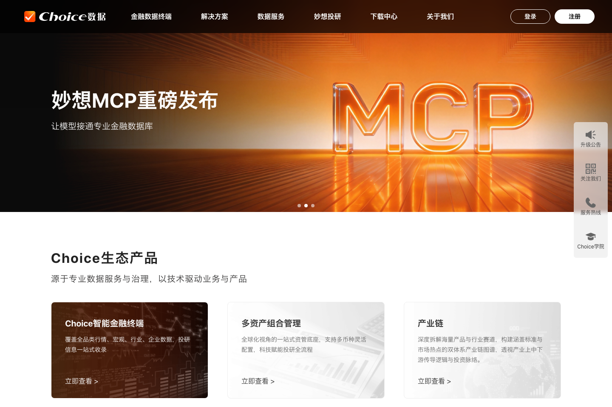
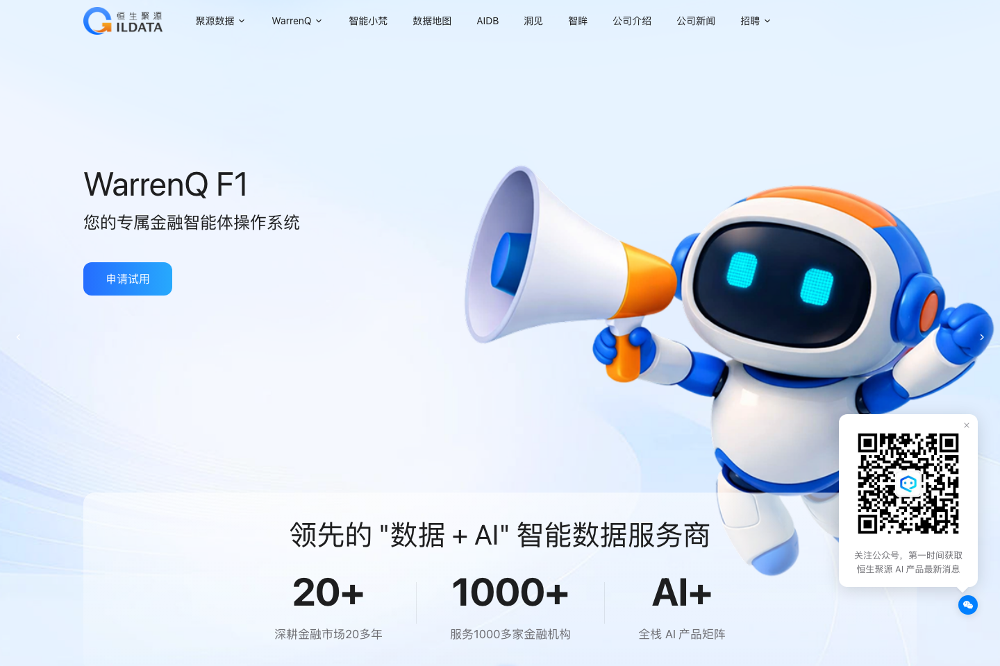
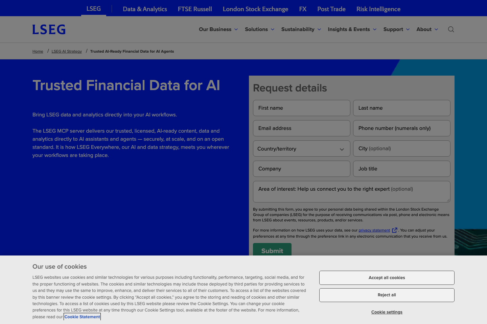
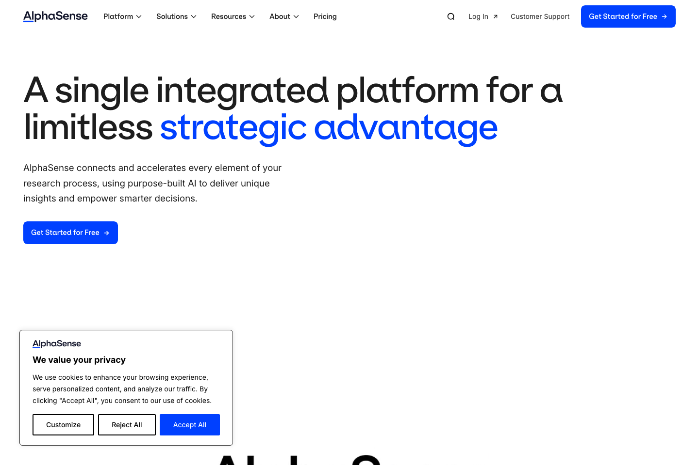

1
首页应先证明“金融”，再证明“AI”
可信数据源、覆盖范围、更新时间、研究方法、机构客户与合规能力应早于模型参数和技术名词。Morningstar、LSEG、S&P 都把可信数据作为 AI 叙事的地基。
影响：提高机构决策人继续浏览与留下线索的意愿。
重新对标 13 个金融数据、金融 AI 与任务式 Agent 平台：Morningstar、LSEG、S&P Global / Kensho、FactSet、AlphaSense、Hebbia、Rogo、东方财富 Choice、同花顺 iFinD、恒生聚源、恒生电子、Wind 与 Manus。研究覆盖 MCP、Skill、Agent、数据服务、案例、试用、开通、广场、个人中心、积分/用量与服务治理。
上一版偏“通用 Agent 平台”。这一版从金融机构采购、专业用户研究、开发接入和管理治理四个真实决策场景出发。
可信数据源、覆盖范围、更新时间、研究方法、机构客户与合规能力应早于模型参数和技术名词。Morningstar、LSEG、S&P 都把可信数据作为 AI 叙事的地基。
不是把数据、MCP、Skill、Agent 平铺成菜单，而是明确它们如何把金融问题变成可审计交付物：报告、模型、组合分析、尽调、预警或客户材料。
机构决策人看方案、案例、安全与 POC；业务用户看任务、样例与试用；开发者看数据目录、MCP/API、权限、文档与沙盒。
Morningstar、LSEG、S&P 的共同重点不是协议本身，而是持牌数据、既有权益、引用溯源与权限控制。MCP 详情页必须回答数据口径、可用工具、授权对象和审计方式。
AlphaSense、Hebbia、Rogo 强调多步研究、来源引用、表格/文档/模型交付与可复用工作流。金融场景里“看起来对”远远不够。
卡片要展示资产范围、数据截止日、更新频率、口径、许可、权限、输出样例、SLA、预计成本与验证状态。只有名称、图标、安装量远远不够。
预置去敏金融场景、固定样例数据与验收清单，让用户先核对引用、数字口径和交付格式，再进入真实数据 POC 与正式开通。
借鉴 Manus 的团队用量和 Rogo 的 Credit Center，但要进一步呈现数据许可、API/MCP 调用、模型成本、项目分摊、异常消耗和单位成果成本。
如果首页把“模型、MCP、Skill、Agent”并列成四个大入口，设计一开始就错了。客户买的不是名词，而是带有金融数据权利与责任边界的结果。
建议定位：从“AI 服务官网”升级为“可信金融智能开放平台”。核心承诺是：把权威金融数据、机构方法与可治理 AI 能力嵌入每一个工作流。
四类产品解决的问题不同。设计时应分别借鉴其数据信任、研究体验、开放能力和任务式交互，而不是寻找一个可以整站照抄的对象。
卖点是数据覆盖、方法论、许可、稳定交付与专业终端。最值得学的是“为何可信”和“如何进入工作流”。
卖点是从研究问题到引用、表格、模型、PPT 和监控的端到端完成。最值得学的是可审计 Agent 与交付物展示。
卖点是数据资产、MCP/API、Skills、Agent 工程、行业部署和运维治理。最值得学的是能力目录与企业开通方式。
不是金融数据主竞品，只借鉴任务输入、异步执行、Skill 共享、团队协作、积分账本与结果交付。
评分基于截至 2026-10-08 可访问的公开官网、产品页与官方文档，是本报告的设计成熟度判断，不是平台官方评级。5 点表示公开表达完整，不代表产品能力绝对更强。
| 平台 | 金融信任 | 数据表达 | AI / Agent | 案例 | 试用 / POC | 开发接入 | 能力广场 | 治理 / 成本 | 一句话判断 |
|---|---|---|---|---|---|---|---|---|---|
| Morningstar数据 + MCP | “独立研究 + 可信数据 + AI 接入”叙事最完整 | ||||||||
| LSEG数据基础设施 | 把既有许可、权益与 MCP 权限讲得最像企业基础设施 | ||||||||
| S&P Global / KenshoAI-ready data | Marketplace、确定性检索、Agent / MCP 组合最值得拆解 | ||||||||
| FactSet智能金融平台 | 以 Mercury 串联搜索、数据和工作流，专业但偏销售驱动 | ||||||||
| AlphaSenseAI research | “搜索 → 深研 → Agent → 成品”的价值演示最强 | ||||||||
| HebbiaMatrix | 用可视化分步推理解决金融 AI 黑箱问题 | ||||||||
| Rogofinance agents | 百种金融 Agent、机构案例与 Watchtower 治理最成熟 | ||||||||
| 恒生聚源数据 + AI + MCP | 国内最接近完整“金融 AI 开放平台”产品骨架 | ||||||||
| 东方财富 Choice终端 + 妙想 | 从终端首页直推 MCP 与 Skill，产品更新感强 | ||||||||
| 同花顺 iFinD数据 + API | API / MCP / CLI / Skill 接入非常实，但官网叙事分散 | ||||||||
| Wind终端 + Alice | 数据权威与专业终端强，AI 开放生态仍缺统一入口 | ||||||||
| 恒生电子LightGPT | 行业模型、组件、评测和部署治理清楚，官网偏架构说明 | ||||||||
| Manus任务式交互参照 | 只借鉴任务、Skill、团队与积分，不借鉴金融可信度 |
● 青色：金融平台公开表达成熟度；● 金色：交互参照。登录态内的真实控制台若无法公开核验，不以猜测补齐。
截图仅用于页面结构与表达分析，版权归对应平台所有。真正要学习的是信息顺序与信任机制，不是配色和插画。




这六个模式应进入产品结构和交互，不应只停留在报告里的“灵感图”。
展示数据来源、覆盖、许可、更新和方法论，再说明 AI 如何调用。金融智能的可信度来自可验证地基。
MORNINGSTAR · LSEG · S&P简单取数走可重复 API；复杂研究走多步检索与 Agent。不要让所有问题都进入一个不可预测的聊天框。
S&P AI DATA PORTAL答案、表格、模型和报告都能回到原始来源；用户可看、改、重跑每一步，而不是只能接受最终文本。
ALPHASENSE · HEBBIA“发起覆盖报告”“估值包”“投委会备忘录”比“智能研究 Agent”更具体；样例结果即最有说服力的产品介绍。
ROGO AGENT LIBRARYMCP 与 Agent 应尊重既有数据许可、组织角色和内容权益，不要求客户再建立一套孤立授权系统。
LSEG MCP · MORNINGSTAR MCP管理员同时看到模型、Agent、数据访问、政策、成本和 ROI；用量不是财务附属页，而是安全治理的一部分。
ROGO WATCHTOWER · MANUS TEAM对外不把 MCP、Skill、Agent 做成三个孤岛。它们应处在一条从金融数据到业务结果的价值链上，治理能力横向贯穿。
按行业与场景查看方案、机构案例、数据边界、安全合规、部署方式和 POC 路线。
主 CTA：申请场景 POC选择研究、投顾、风控或运营任务，用样例数据跑出一份可核验结果，再申请真实数据。
主 CTA：用样例立即体验浏览 Dataset、MCP、Skill、API、SDK、权限、价格和文档，在沙盒完成首次成功调用。
主 CTA：进入开发者沙盒推荐首屏不是机器人、发光球和空泛口号，而是一个真实金融任务如何调用授权数据、留下引用并交付结果的产品片段。
用可溯源、可授权、可审计的 MCP、Skills 与 Agents，完成研究、投顾、风控和运营任务。
12 个数据点 · 8 个原始来源 · 2 个口径提示 · 可导出 PPT / Excel
首屏价值与真实任务 → 权威数据与方法 → 四大场景 → 可试用 Agent → 能力与数据广场 → 机构案例 → 安全与治理 → 开通方式。
“公司介绍”“技术架构”“生态愿景”都不应该抢在用户确认价值之前。
广场统一容纳 Agent、Skill、MCP、Tool、Dataset 与 Template，但不同对象使用同一套“可信交易卡”骨架。
穿透底层持仓，识别集中度、风格暴露、行业重叠与风险变化，生成客户可读报告。
官网、试用区、控制台与开发者中心使用同一套对象名称和状态，不要在购买后突然从“研究 Agent”变成不可理解的资源 ID。
价值主张、三条角色路径、数据证明、场景、可试 Agent、案例与治理。
指标：首页 → 有效路径投研、投顾、风控、合规、运营；按角色、任务、交付物筛选。
指标：场景 → 方案Agent / Skill / MCP / Tool / Dataset / Template 统一搜索、比较与试用。
指标：广场 → 详情样例结果、数据口径、方法、引用、权限、许可、成本、SLA 与版本。
指标：详情 → 试用预置样例、步骤可见、来源核验、消耗预估、验收与一键保存。
指标：可验证成功真实数据范围、权益校验、部署方式、预算、SLA、审批与合同状态。
指标：试用 → POC问题、数据、工作流、上线周期、结果、证据、同款服务与联系人。
指标：案例助攻Quickstart、API、MCP、SDK、认证、调试器、沙盒、状态与更新。
指标：首次成功调用继续任务、待审批、异常服务、最近成果、预算与权益到期提醒。
指标：首日激活状态、负责人、项目、数据权益、版本、健康、成本与绑定 Agent。
指标：管理自助率余额、预算、项目/成员/服务分摊、预测、异常、导出与单位成果成本。
指标：费用可解释成员、角色、数据权益、目录可见、审批、密钥、保留与审计策略。
指标：审批效率Trace、调用、成功率、延迟、错误、版本差异、停用、回滚与工单。
指标：故障恢复提交、测试、金融评测、安全审核、定价、发布、收益和版本治理。
指标：供给质量B2B 金融数据许可决定了不可能全部“一键购买”，但也不能只有“联系我们”。推荐用样例自助体验筛选意向，再进入可跟踪的 POC 与审批。
按角色与交付物选场景，不先选技术对象。
浏览意图去敏数据、固定口径、展示步骤与预计成本。
体验成功核对数字、引用、格式、权限与限制提示。
信任建立校验许可、范围、部署、成员与成功标准。
销售接力方案、预算、SLA、合同、密钥与回执同屏。
正式成交健康、成本、版本、价值与续费建议可见。
留存扩容已使用 64% · 预计月末 ¥ 96,200
含模型、金融数据、MCP 与第三方服务
| 研究项目 / 新能源行业 | Agent 任务 128 · 数据调用 864 | ¥ 14,860 |
| 投顾服务 / 组合分析 | Agent 任务 460 · 组合穿透 1,920 | ¥ 22,470 |
| 开发环境 / MCP 调试 | 调用 12,804 · 失败率 1.8% | ¥ 6,930 |
视觉要传达专业、精确、可验证、可操作。真实产品界面、数据来源、工作流状态和成果证据，比 3D 机器人、宇宙渐变与漂浮粒子更有说服力。
深海军蓝 + 暖白纸张 + 信号青绿；编辑式大标题与高密度数据界面并存。适合兼顾机构决策人、业务用户与开发者。
更强控制台感，强调网格、状态、权限、监控和服务编排。适合平台后半段与开发者中心，不建议整站都做暗色。
更像高质量研究机构和财经出版物，适合案例、洞见和方法论内容；若单独使用，会削弱开放平台与产品操作感。
包含标的、数据截止日、调用步骤、引用数、口径提示和交付格式。
机器人插画会把专业金融数据平台降格成通用 AI 活动页。
时间戳、更新频率、状态和来源徽章不是脚注，而是核心信息。
用编辑式层级、宽窄错落和真实界面建立节奏，而不是十二宫格。
只用于计划、调用、授权确认、校验、完成和异常，不做纯装饰光效。
列表看详情、详情先试用、试用成功再申请 POC；每页只有一个主 CTA。
以下提升幅度是实验目标，不是既成事实。先把信息架构、真实样例与开通链路做对，再做大规模内容和生态运营。
完成定位、对象模型、三类用户路径和 P0 页面高保真。
让试用结果可验收，并把高意向用户无缝移交销售和管理员。
用真实案例和可治理供给扩大内容、合作伙伴与复购。
通用口号 vs 三角色入口 + 真实金融任务。
成功：至少提升 25%普通能力卡 vs 数据/口径/权限/样例/成本完整卡。
成功：至少提升 20%空白聊天框 vs 固定样例 + 验收清单 + 真实数据申请。
成功：至少提升 15%全站“联系销售” vs 样例成功后再进入 POC。
成功：低质量线索下降 30%积分余额 vs 数据、模型、任务、成员与项目统一账本。
成功：费用工单下降 25%品牌故事 vs 可复核结果 + 同款服务 + POC 路线。
成功：案例助攻 POC 提升 20%平台功能事实优先引用官网、开发者文档与官方产品页；评分、蓝图和建议属于本报告分析。截图受反爬或登录限制时，不用猜测补齐。